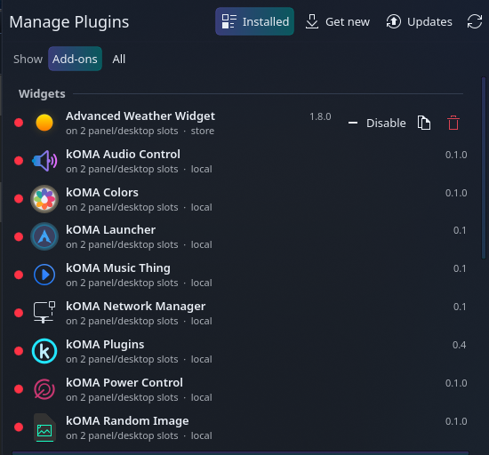
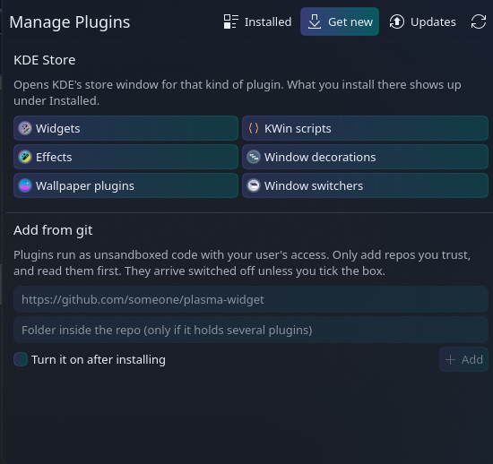
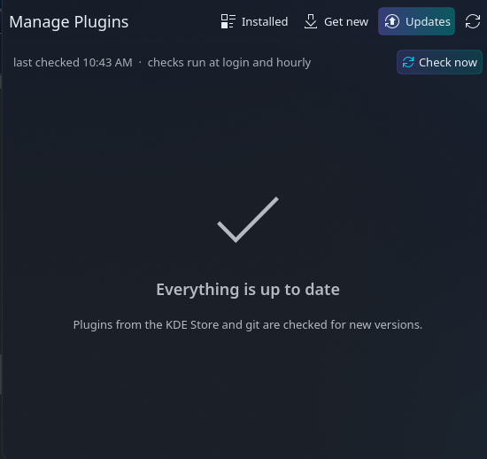

Know what’s installed
See widgets, KWin scripts, effects, decorations, wallpapers, and window switchers, with their status, version, and installation source.
KDE Plasma 6 · Free & open source
Your Plasma add-ons, managed from one place. See what’s installed, turn plugins on and off, find new ones, and keep them up to date—all from your panel.
I made kOMA Plugins because I wanted a simpler way to manage the add-ons that make my KDE desktop my own. Inspired by Omarchy, it brings those everyday controls together in a widget that follows Plasma’s look and feel.
See widgets, KWin scripts, effects, decorations, wallpapers, and window switchers, with their status, version, and installation source.
Enable or disable add-ons from the panel. Turn on a widget once and it appears on every existing panel.
Browse KDE Store categories or add a plugin directly from a Git repository.
Install KDE Store updates inside the widget, with progress and error messages. Update Git plugins with validation and rollback if checks fail.
Clone a QML plugin into your own copy, edit it, and reload it. The manager follows your Plasma theme and color scheme.
Remove local add-ons with confirmation. Their files are moved aside rather than deleted; distro packages stay with your package manager.



Free, open source, and MIT licensed. Find the source, installation instructions, and downloadable Plasma widget on GitHub.
View kOMA Plugins on GitHub →Requires KDE Plasma 6 and Python 3.11 or newer. See the repository for full requirements.